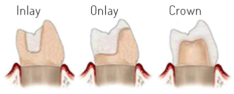
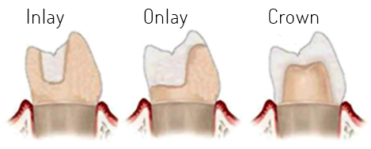
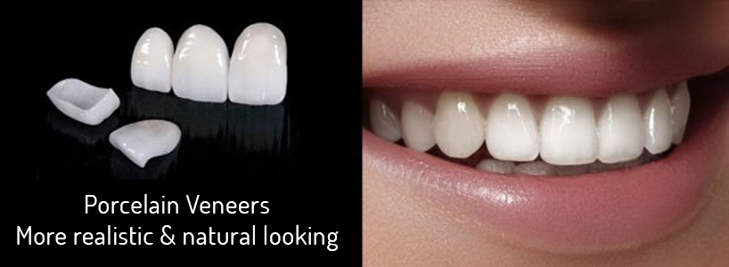
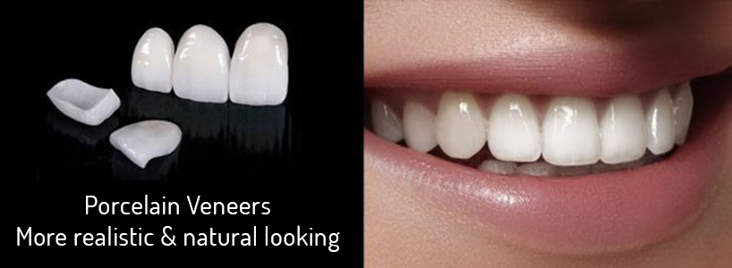
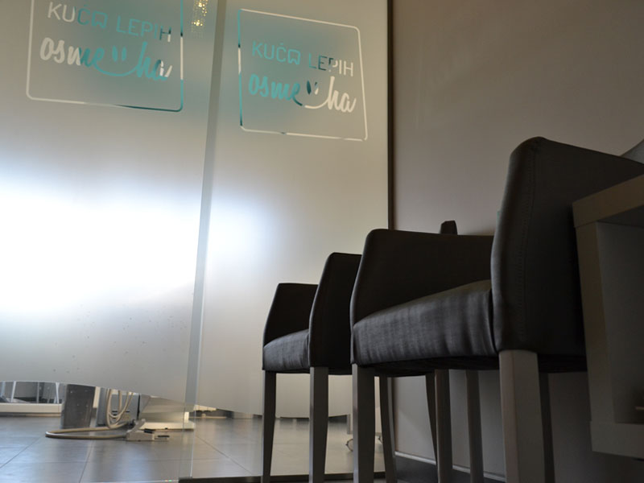
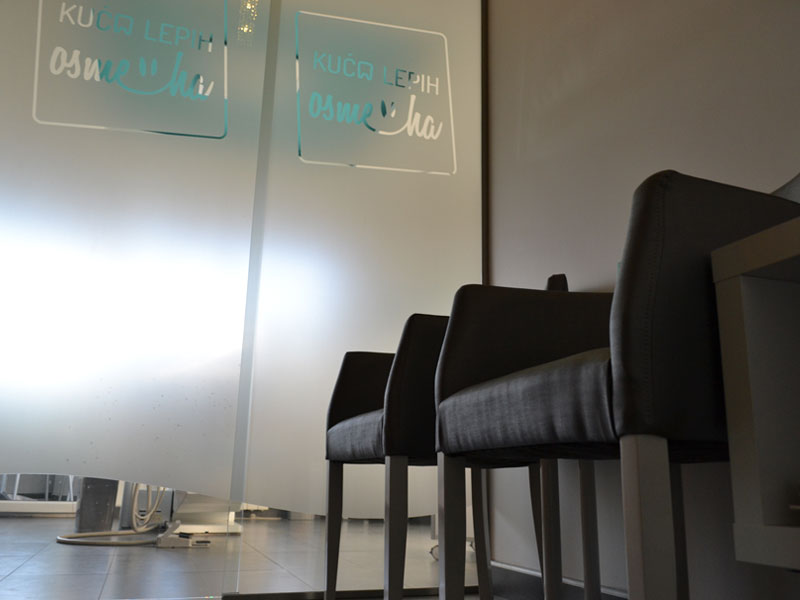
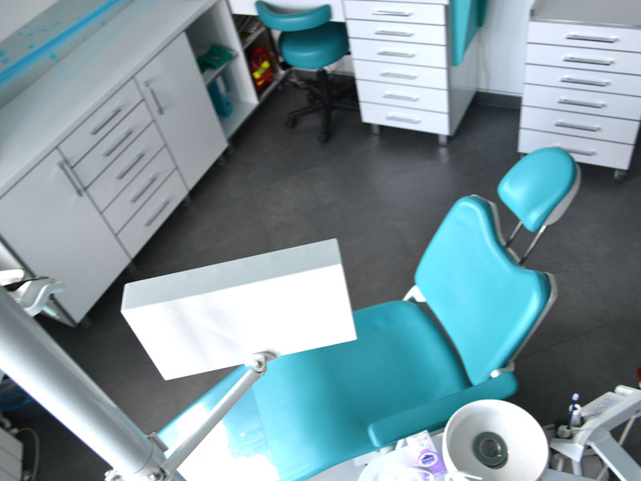
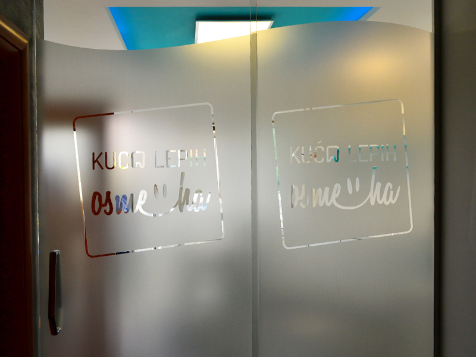
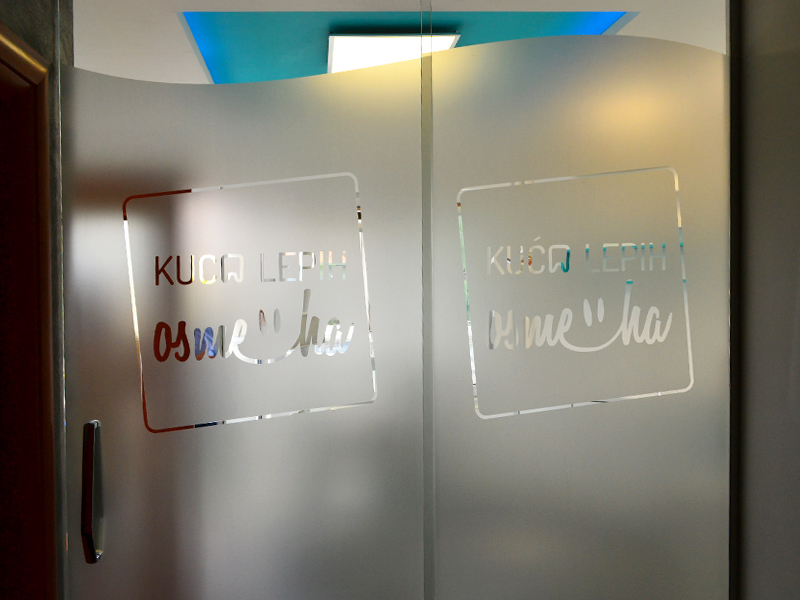

ABOUT US
Kuca Lepih Osmeha (“House of Beautiful Smiles” in Serbian language) is a modern dental office, situated in a quiet, residential Belgrade neighborhood, surrounded on all sides with wooded hills. It is principally patient-oriented family business, where Doctor Tamara uses up-to-date methods and technologies in order to help her patients in the most pleasant way possible.
A wide variety of treatments are available, in cooperation with the team of specialists from dental surgery and orthodontics (including prosthetics, implantology, esthetic dentistry…), all structured to be affordable, yet highly professional none the less.
Kuca Lepih Osmeha aims to provide full attention to each patient, regardless of the difficulty of the required intervention. Along with a healthy and beautiful smile, you will get prevention advice so that each patient may reduce future visits to the dentist.
SERVICES
General dentistry
Fillings white/composite, black/amalgam, inlay and onlay
General dentistry or conservative dentistry deals with the treatment of solid dental tissues (carries). After removing caries, the tooth needs to be restored, which can be done by direct (black, white) or indirect restorations (inlay, onlay).
 

Cosmetic dentistry
Ceramic crowns, veneers, tooth whitening, invisalign
There are many types of dental treatment which fall under the category of ‘cosmetic dentistry’. In fact, in our opinion, all treatments should fall into this category – after all, who wants non-cosmetic dentistry?

 



Endodontics
Root canal treatment
If a tooth root canal becomes infected, there is still a good chance that it can be preserved using root canal treatment.

Dental Prosthetics
Crowns, Bridges, Full and Partial dentures
Dental crowns are tooth-shaped caps that are placed over teeth to restore original shape and size of the tooth, enhance its strength and appearance. This is why they are also known as dental caps.


Periodontology
Gum disease, periodontitis
Periodontitis is inflammation of the gums and supporting structures of the teeth. This inflammation of the gums, which usually takes the form of redness, swelling and a tendency to bleed during teeth brushing, is the body’s response to certain bacteria that have been allowed to accumulate on the teeth in form of plaque and tartar.
Orthodontics
Braces, removable appliances
Orthodontics is a specialty discipline of dentistry that focuses on the alignment of the teeth and jaws to improve a person’s smile and oral health.

Oral surgery
Routine and complicated tooth extractions, surgical extraction, implants etc.
Routine extractions – the relatively straightforward removal of teeth, usually due to decay or periodontal disease. Complex or surgical extractions- for example when the crown is missing and only the root remains. Wisdom teeth extractions.
Hyaluronic fillers
Filling indents in the skin to reduce wrinkles
Hyaluronic fillers are made from hyaluronic acid, a substance found naturally in the body’s connective tissues and skin. Once injected, they plump up facial skin that may have lost volume or elasticity as part of the aging process, filling in wrinkles from the inside and making the skin appear younger and rejuvenated.
PRICE LIST
The prices are given in RSD
Dental exam
Dental exam
free
Specialist exam
2000
Prosthetics
Immediate denture per jaw
19000
Partial acrylic denture per jaw
19000
Total acrylic denture per jaw
21600
Partial skeletal denture per jaw
42500
Skeletal denture + attachment per jaw
46000
Breflex denture per jaw
40000
Single tooth denture + additional elements
6000
Direct relining of denture
1500
Indirect relining of denture
6000
Denture repair in office
1500
Denture repair in a lab
2500
Temporary crown in office
1000
Temporary crown in lab
2400
Crown removal per crown
500
Crown placement
1000
Metal ceramic crown
10800
Non-metal ceramic crown
12000
Survey crown
24000
Crown on implant
24000
Post and core treatment
4800
Fiberglass reinforcement
4500
Occlusal splint
6000
Conservative dentistry
Amalgam filling - 1 surface
1800
Amalgam filling - 2 surfaces bicuspid
2000
Amalgam filling - 2 surfaces molar
2200
Amalgam filling - 3 surfaces bicuspid
2500
Amalgam filling - 3 surfaces molar
2800
Composite filling – 1 surface
2000
Composite filling – 2 surfaces bicuspid
2200
Composite filling – 2 surfaces molar
2500
Composite filling – 3 surfaces bicuspid
2500
Composite filling – 3 surfaces molar
3000
Composite filling class V
1500
Composite filling sandwich technic
3000
Composite filling reinforced
3500
Composite build up
4000
Reinforcement with post + filling
2000
First aid
1000
Indirect pulp capping
500
Direct pulp capping
1000
Endodontic therapy per visit
1000
Canal filling per canal
800
Therapy of pulp gangrene
800
Mortal devitalization
500
Revision endodontic therapy + endo
1000
Medication placement
500
Composite inlay
9600
Ceramic inlay
24000
Machine assisted endodontic therapy of single canal teeth
4200
Machine assisted endodontic therapy of two canal teeth
4800
Machine assisted endodontic therapy of three canal teeth
6000
Pediatric dentistry
Removal of soft plaque and oral hygiene advice
500
Teeth fluoridation
1000
Fissure sealant
1000
Extraction of milk teeth
1000
Composite filling on milk teeth
2000
Amalgam filling on milk teeth
2000
Glass-ionomer filling
1500
Oral surgery
Tooth extraction - basic
1500
Tooth extraction - complicated
2500
Therapy of alveolitis
500
Cosmetic dentistry
Devitalized tooth whitening
4000
In office tooth whitening
16000
At home tooth whitening
16000
Tooth gem
2500
Indirect composite veneer
6000
Direct composite veneer
14400
Ceramic veneer
24000
Periodontology
Removal of soft and hard dental plaque
2000
Removal of soft dental plaque
1000
Periodontal pocket treatment per tooth
1000
Periodontal pocket treatment per quadrant
3000
Periodontal pocket treatment per jaw
5000
DOCTOR
Dr Tamara Ilic
Doctor Tamara Ilic has graduated from top Serbian dental school – Belgrade University’s Faculty of Dental Medicine in 2013.
She interned and practiced at the prestigious Military Medical Academy clinic in Belgrade, after
which she continued her carrier working in the dental clinic in central Belgrade.
She established her own practice in 2016, with the aim to bring the focus of her work to her patients.
Doctor Tamara is fluent in English and has a good working knowledge of Spanish and French languages,
while also actively studying German language.
GALLERY

 Dental Office
Dental OfficeKuca Lepih Osmeha">


Kuca Lepih Osmeha"> Dental Office
Kuca Lepih Osmeha">

 Dental Office
Dental OfficeKuca Lepih Osmeha">
CONTACT
Our Address
Borska 44/8, Belgrade, Serbia
ordinacija@kucalepihosmeha.com
Office Phone No.: +381 11 351 39 25
Dr Tamara Phone No.: +381 65 351 39 25
Business Hours
Monday - Thursday
10:00h - 20:00h
Friday (alternately)
10:00h - 16:00h and 14:00h - 20:00h
Saturday - As per arrangements